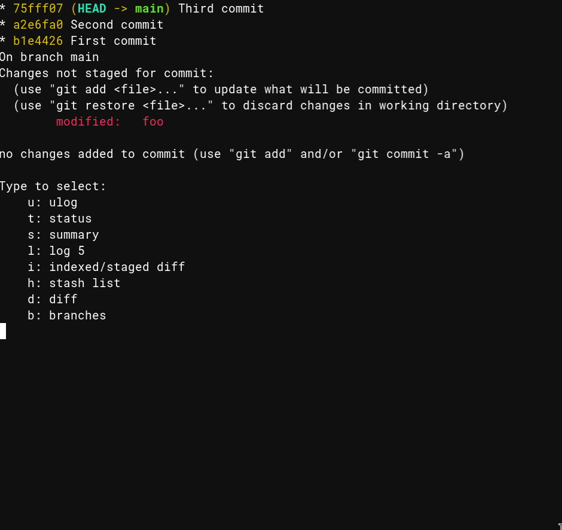

Bash quick select prompter utility¶
In this blog post I’ll showcase flexible utility script prompter.bash that I wrote.
It is a vim-which-key inspired shortcut utility but for a terminal.
First there is a two gifs showcasing the script followed with more detailed Git example. At the end there is usage instructions with full sources.
Gif showcases¶
In following gif the keys pressed after enter are a, a, b.
This is variation what will be shown in the next section.
Git example¶
Following invocation of prompter.bash (arguments are explained in Usage):
$ /path/to/prompter.bash \
b "branches # git branch" \
t "status # git status" \
s "summary # git log --oneline 5; git status" \
ls "short log 20 # git log --oneline -n 20" \
ll "log 5 # git log -n 5" \
dd "diff # git diff" \
di "indexed/staged diff # git diff --staged" \
h "stash list # git stash list"
which can be shortened with e.g. Bash alias gitp,
will result in:
$ gitp
Type to select:
ll: log 5
ls: short log 20
dd: diff
di: indexed/staged diff
t: status
s: summary
h: stash list
b: branches
and terminal will wait for input and update immediatly when any key is pressed.
For example pressing t, will result in a executiong of git status
after clearing the screen.
However if the typed key does not result in unique command, user is asked for another one, but with delimited options. For example if after:
$ gitp
Type to select:
ll: log 5
ls: short log 20
dd: diff
di: indexed/staged diff
t: status
s: summary
h: stash list
b: branches
user types l, then options are updated to:
$ gitp
Type to select:
l: log 5
s: short log 20
after which the user can choose either one by typing l or s.
One useful thing is to call gitp inside a loop:
function infinite_gitp() {
while true; do
/path/to/prompter.bash \
b "branches # git branch" \
t "status # git status" \
s "summary # git log --oneline 5; git status" \
ls "short log 20 # git log --oneline -n 20" \
ll "log 5 # git log -n 5" \
dd "diff # git diff" \
di "indexed/staged diff # git diff --staged" \
h "stash list # git stash list"
echo
done
which will result in a convinient way of quering information of git repository on the fly. See the second gif example for variation of this.
Usage¶
Usage: prompter [key1 cmd1 [key2 cmd2 [ ... ]]
Prompter will query keystrokes (x1, x2, ...) until word 'x1x2...':
A) does not match beginning of any key.
B) matches uniquely to beginning of 'keyN'.
In case of:
A) prompter exits with code 1.
B) prompter executes 'cmdN'.
All 'cmdN' are stripped up to first # character.
This can be used as description for the command.
If 'key1 cmd1' is missing, usage is printed with exit code 0.
Source¶
Version 2024-04-26.
#!/usr/bin/bash
function print_usage() {
echo "Usage: prompter [key1 cmd1 [key2 cmd2 [ ... ]]"
echo
echo " Prompter will query keystrokes (x1, x2, ...) until word 'x1x2...':"
echo
echo " A) does not match beginning of any key."
echo " B) matches uniquely to beginning of 'keyN'."
echo
echo " In case of:"
echo
echo " A) prompter exits with code 1."
echo " B) prompter executes 'cmdN'."
echo
echo " All 'cmdN' are stripped up to first # character."
echo " This can be used as description for the command."
echo
echo " If 'key1 cmd1' is missing, usage is printed with exit code 0."
}
# Associative array of (keyN, cmdN) pairs.
declare -A opts
if (( ${#*} > 1 )); then
# Take from
for (( i=1; i < ${#*}; i+=2)); do
(( j=i+1 ))
key="${!i}"
cmd="${!j}"
opts["$key"]="$cmd"
done
else
print_usage
exit 0
fi
# Array of the keys.
declare -a viable_opts="( ${!opts[*]} )"
currently_typed=""
# Remove all opts from viable_opts that do not match what is in currently_typed.
function update_viable_opts() {
local -a new_viable_opts
for opt in "${viable_opts[@]}"; do
[[ "$opt" =~ ^"$currently_typed".*$ ]] && new_viable_opts+=( "$opt" )
done
viable_opts=( "${new_viable_opts[@]}" )
}
function print_viable_opts() {
echo "Type to select:"
for opt in "${viable_opts[@]}"; do
# Remove everything from first # onwards.
echo " ${opt/#$currently_typed/}: ${opts[$opt]/%#*/}"
done
}
function check_for_matched_opts() {
local num_of_viable_opts="${#viable_opts[@]}"
if [[ "$num_of_viable_opts" == 0 ]]; then
echo "Nothing found!"
exit 1
elif [[ "$num_of_viable_opts" == 1 ]]; then
local opt="${viable_opts[0]}"
# Remove everything up to first #.
local cmd="${opts[${opt}]/#*#/}"
if [[ -v PROMPTER_DEBUG ]]; then
echo "found: ${opt}"
echo "executing: $cmd"
fi
# Clear screen before executing the command.
tput home
tput ed
$cmd
exit
fi
}
while true; do
# Will print amount of viable options + 1 rows.
print_viable_opts
(( lines_printed = "${#viable_opts[@]}" + 1 ))
read -s -r -n 1 pressed_key
currently_typed+="$pressed_key"
tput cuu "$lines_printed" # Move up.
tput ed # Clear what is below.
update_viable_opts
check_for_matched_opts
done